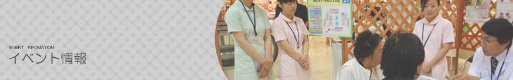

令和８年６月１４日（日）、久留米シティプラザ（六角堂広場）において開催します。 場所：久留米シティプラザ（六角堂広場） 時間：12時～15時 内容：ポスター展示、ポスター表彰式、久留米大学医学部歯科口腔医療センター・楠川教授による口腔がん検診、歯科相談、歯磨き指導とフッ素塗布、指の型取り体験コーナー、キーホルダー作り（先着20名様）パタカ測定、くじ引きコーナー、高齢者支援コーナー（血管年齢測定／握…
令和７年６月１日（日）、久留米シティプラザ（六角堂広場）において開催します。 場所：久留米シティプラザ（六角堂広場） 時間：12時～15時 内容：ポスター展示、ポスター表彰式、久留米大学医学部歯科口腔医療センター・楠川教授による口腔がん検診、歯科相談、歯磨き指導とフッ素塗布、指の型取り体験コーナー、パタカ測定、くじ引きコーナー、高齢者支援コーナー（血管年齢測定／握力測定／介護予防相談／フレイルチェ…
令和６年６月９日（日）、久留米シティプラザ（六角堂広場）において開催します。 場所：久留米シティプラザ（六角堂広場） 時間：10時～15時 内容： ポスター展示、ポスター表彰式、8020高齢者よい歯の表彰式、歯科相談、歯磨き指導とフッ素塗布、指の型取り体験コーナー、パタカ測定、くじ引きコーナー、高齢者支援コーナー（握力測定/介護予防相談/福祉用具の展示）、久留米大学医学部歯科口腔医療センター・楠川…
令和６年３月２４日（日）、久留米シティプラザ（六角堂広場）において開催され、当会からもブースを設けます。 主催：一般社団法人久留米医師会 共催：一般社団法人久留米歯科医師会、一般社団法人久留米三井薬剤師会、（特非）久留米市介護福祉サービス事業者協議会 場所：久留米シティプラザ１Ｆ 六角堂広場 時間：１２:００〜１５:００（最終受付１４:３０） 当会設営ブース：（聞いてみようコーナー）歯の相談コーナ…
令和５年度「歯の健康フェスタ」につきましては、令和５年６月１１日（日）、久留米シティプラザ（六角堂広場）において開催され、無事終了いたしました。
令和５年６月１１日（日）、久留米シティプラザ（六角堂広場）において開催します。 場所：久留米シティプラザ（六角堂広場） 時間：10時～15時 内容： ポスター展示、ポスター表彰式、歯科相談、歯磨き指導とフッ素塗布、指の型取り体験コーナー、おやつの展示と食事相談、パタカ測定、くじ引きコーナー、高齢者支援コーナー（血管年齢/握力測定/介護予防相談/介護保険相談）、久留米大学医学部歯科口腔医療センター・…
令和4年9月1日（木）～9月30日（金）までの期間、70歳以上の方を対象に歯科無料健診を実施いたします。 【健診期間】9月1日（木）～9月30日（金） 【健診場所】久留米歯科医師会会員の歯科医院 （詳しくは「地域の歯医者さん」のページをご覧ください） 【健診時間】歯科医院へお問い合わせください 【対 象 者】７０歳以上の方 【そ の 他】健診表は歯科医院にございます。 事前に歯科医院へお問い合わせ…
令和４年度「歯の健康フェスタ」につきましては、令和４年６月５日（日）、久留米シティプラザ（六角堂広場）において開催され、無事終了いたしました。
令和4年6月5日（日）、久留米シティプラザ（六角堂広場）において開催します。 場所：久留米シティプラザ（六角堂広場） 時間：10時～15時 内容： ポスター展示、ポスター表彰式、 歯科相談（一般/矯正/小児）、歯磨き指導とフッ素塗布、 指の型取り体験コーナー、おやつの展示と食事相談、 高齢者支援コーナー（血管年齢/握力測定/介護予防相談）、 久留米大学医学部歯科口腔医療センター・楠川教授による講演…
令和２年６月７日開催予定の「歯の健康フェスタ」につきましては、新型コロナウイルス感染症の拡大を受け、国の基本方針を踏まえ、国内でのまん延防止や安全確保の観点から中止とすることを決定いたしました。
6月30日（日）、久留米シティプラザ（六角堂広場）において開催します。 場所：久留米シティプラザ（六角堂広場） 時間：10時～16時 内容： ポスター展示、歯科相談/矯正相談、くじ引きコーナー、 歯磨き指導とフッ素塗布、指の型どり体験コーナー、 こどものおやつ：ふなやき作りの体験と試食、 高齢者支援コーナー、 久留米歯科衛生専門学校学生が行う「劇による歯磨き指導」、 口腔ガン検診、 久留米大学医学…
平成30年度「8020高齢者よい歯の表彰」につきましては、11月11日（日）、久留米市民交流センター「くるみホール」において表彰式が行われました。
平成30年度「歯の健康フェスタ」につきましては、平成30年6月3日（日）、久留米シティプラザ（六角堂広場）において開催され、無事終了いたしました。
6月3日（日）、久留米シティプラザ（六角堂広場）において開催します。 場所：久留米シティプラザ（六角堂広場） 時間：10時～16時 内容： ポスター展示、歯科相談/矯正相談、くじ引きコーナー、 歯磨き指導とフッ素塗布、指の型どり体験コーナー、 こどものおやつ：ふなやき作りの体験と試食、 高齢者支援コーナー、 久留米歯科衛生専門学校学生が行う「劇による歯磨き指導」、 口腔ガン検診、 ポスター表彰
令和元年度「歯の健康フェスタ」につきましては、令和元年6月30日（日）、久留米シティプラザ（六角堂広場）において開催され、無事終了いたしました。
令和元年度「8020高齢者よい歯の表彰」につきましては、11月10日（日）、久留米市民交流センター「くるみホール」において表彰式が行われました。